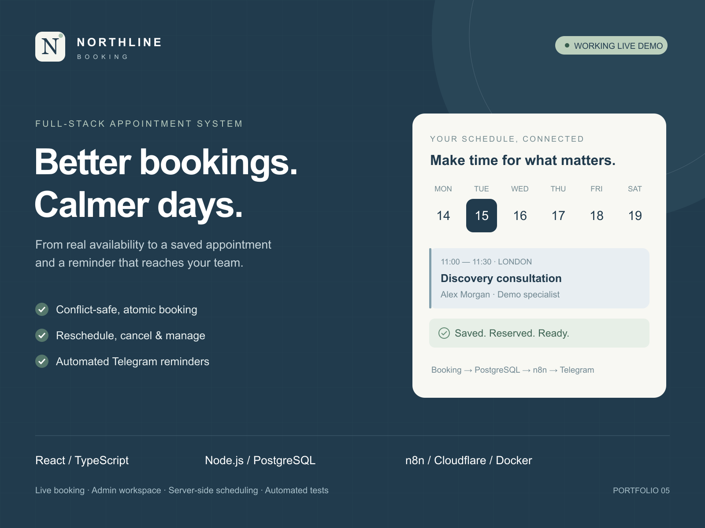
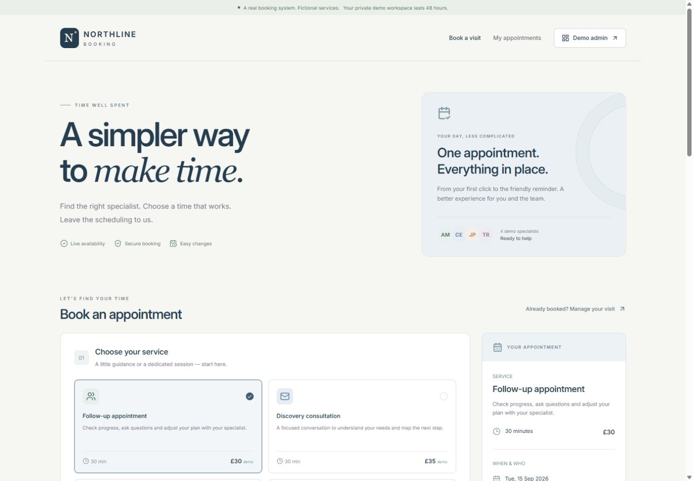
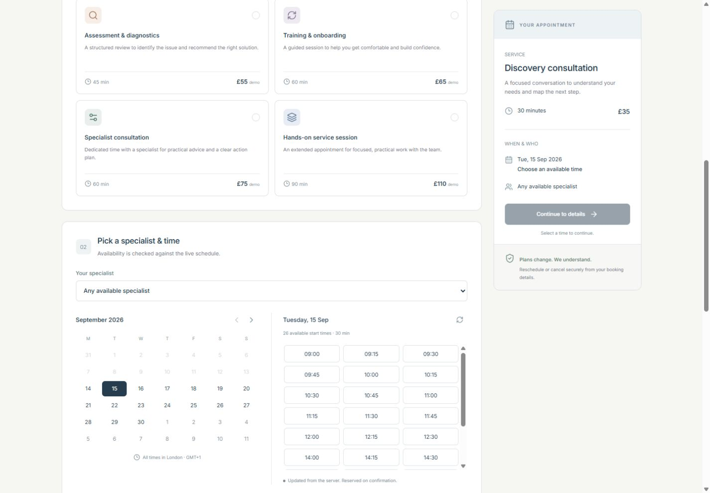
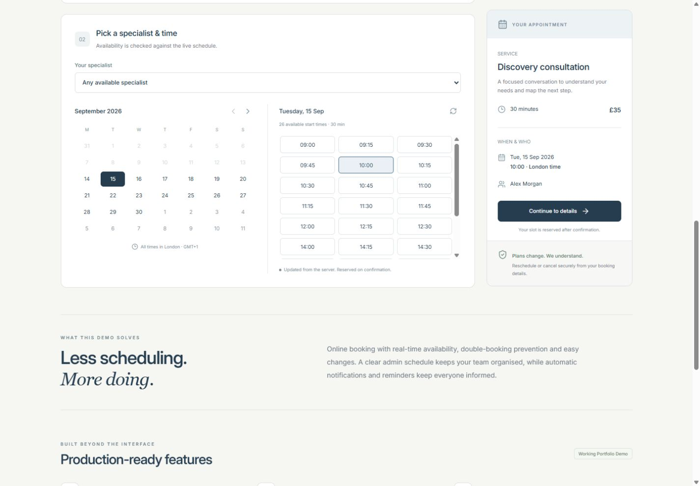
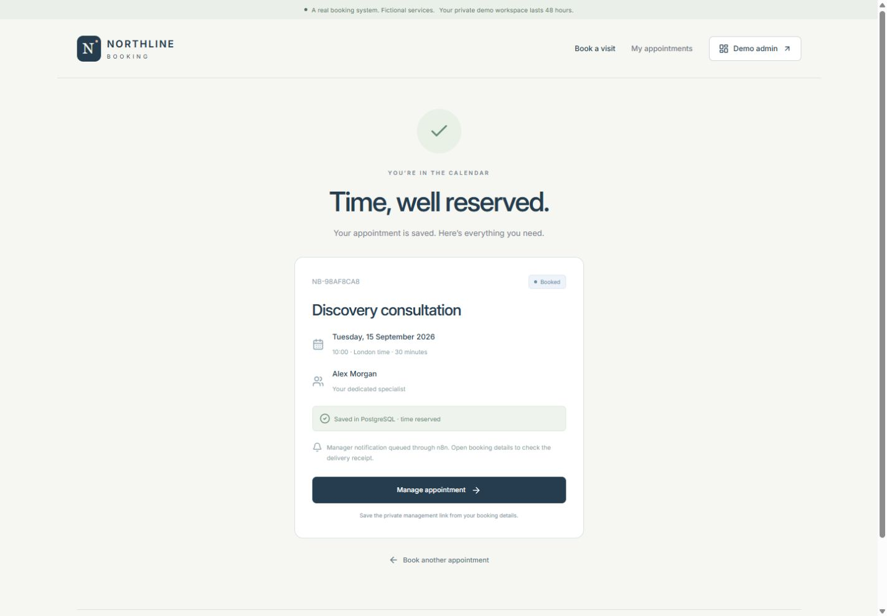
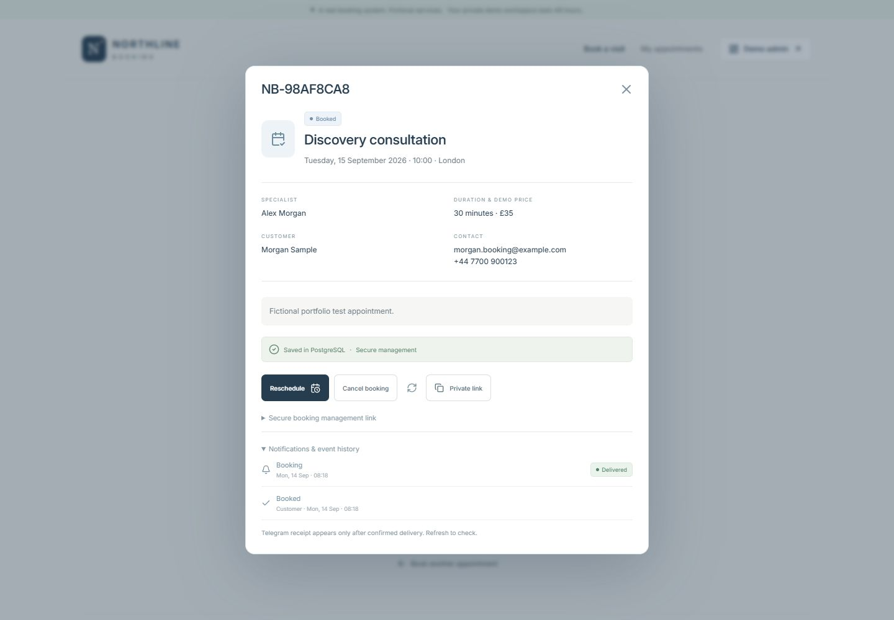
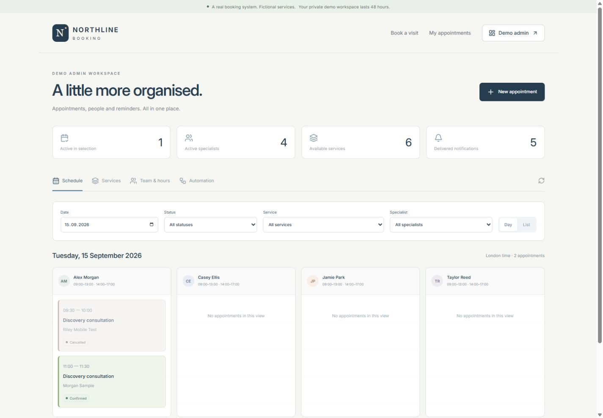
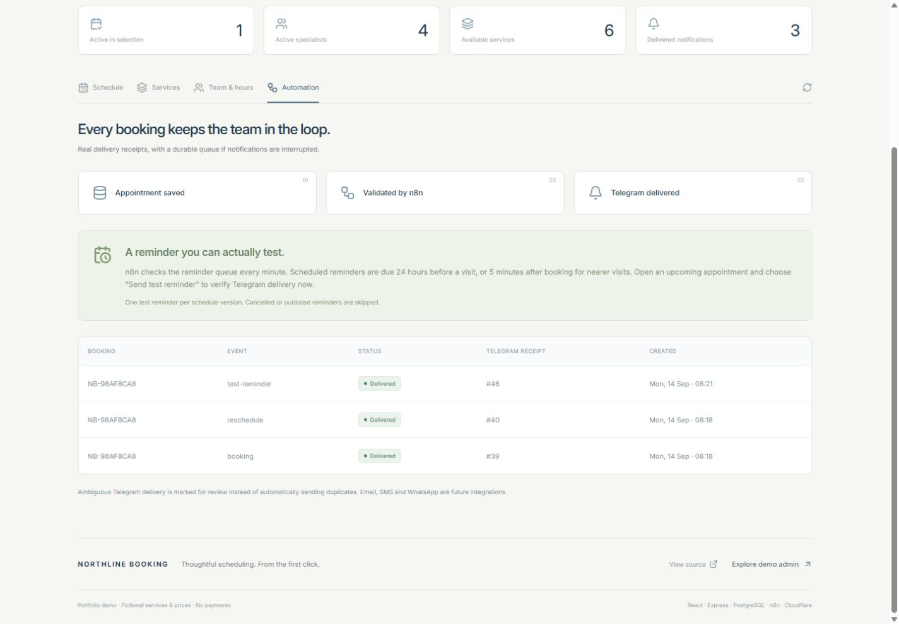
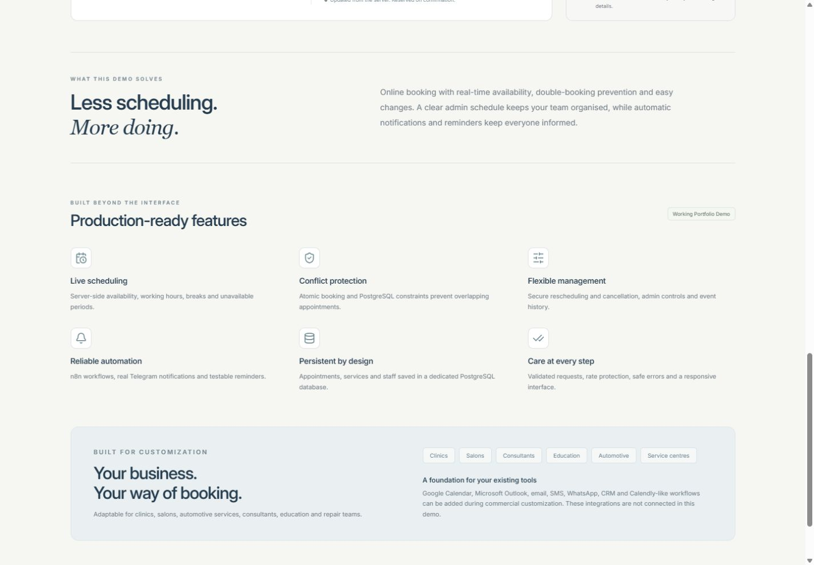

Original portfolio cover 
Better bookings. Calmer days. 1600 × 1200 PNG · Designed cover illustration · Editable SVG Eight real application screenshots Captured from the production site on 14 September 2026. Fictional test details; real database records and automation receipts. Select an image to open its original file.

01 · Public booking page Clear service selection and an appointment summary. 
02 · Service & date selection Six services, four specialists, a live calendar. 
03 · Available time slots Server-side working hours, duration and conflict checks. 
04 · Booking confirmation A real saved record, reference and reserved time. 
05 · Reschedule & cancel Secure booking management and event history. 
06 · Admin schedule Appointments by specialist, status and day. 
07 · Reminders & automation Real n8n delivery with confirmed Telegram receipts. 
08 · Features & customization Implemented features distinguished from future integrations. React · TypeScript · Node.js / Express · PostgreSQL · n8n · Telegram · Cloudflare · Docker
{kind=link}
{kind=link}
{kind=link}
{kind=link}
{kind=link}
{kind=link}
{kind=link}
{kind=link}